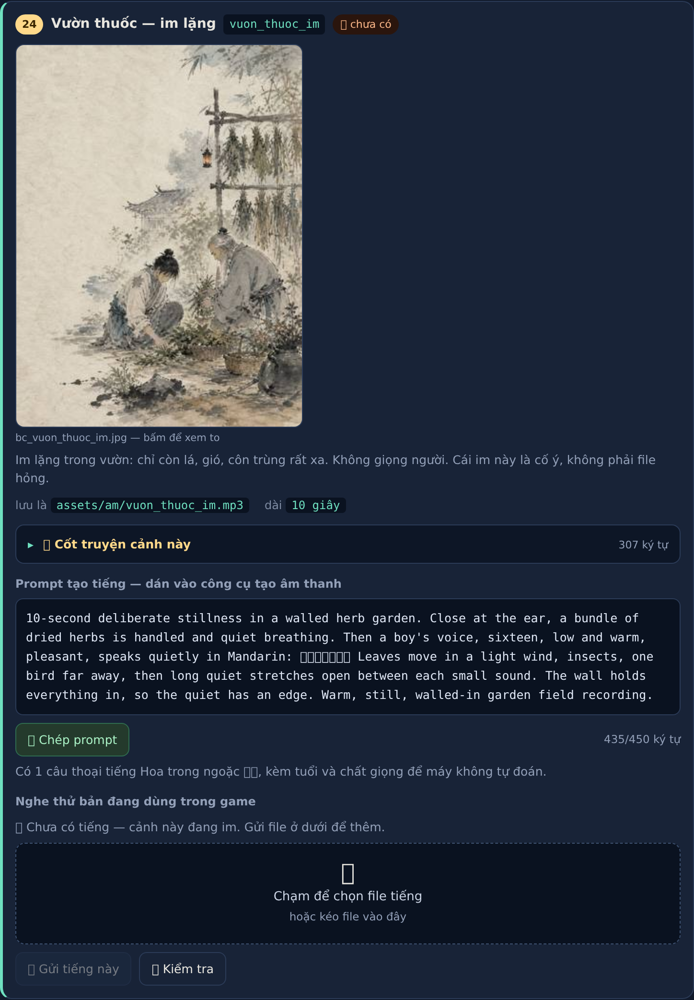
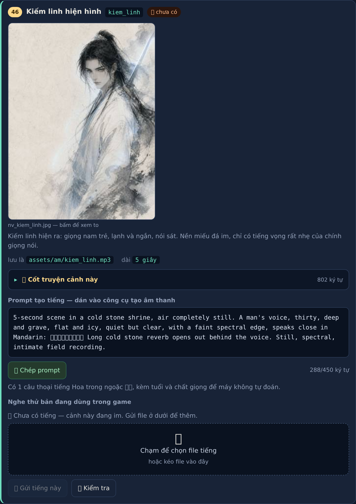

Anh chỉ đúng. Em đã tìm ra nguyên nhân và sửa cả 3 giọng.
game/GIONG_NPC.md có quy tắc: “Chỉ lấy lời NPC, không lấy lời nhân vật chính.”
Nghe hợp lý nhưng sai. Cảnh Vườn thuốc — im lặng chỉ có nhân vật chính nói — nên quy tắc đó xoá sạch thoại. Kết quả: anh nghe im lặng hoàn toàn ở đúng chỗ nhân vật đang nói.
Truyện: “Đa tạ tiền bối,” — ta nói
Prompt mới, đúng giọng anh chốt — nam 16 tuổi, trầm ấm:
… Then a boy's voice, sixteen, low and warm, pleasant, speaks quietly in Mandarin: 「多谢前辈。」 …

Em tách từng câu thoại trong truyện, xem ai nói, rồi so với prompt:
| Kiểm | Kết quả |
|---|---|
| Cảnh có lời nói nhưng prompt không có thoại | 0 cảnh (sau khi sửa) |
| Cảnh chỉ có nhân vật chính nói | đúng 1 cảnh — Vườn thuốc, đã sửa |
| Cảnh chỉ có giọng Hệ thống | 6 cảnh, để nguyên không thoại |
| Prompt quá 450 ký tự | 0 |
Em cũng tìm ra một cảnh nữa cùng lỗi: tuyet_co_do_du. Truyện có lời Tuyết Cơ “Một phần dương khí” nhưng prompt để trống. Đã thêm 「一部分阳气。」.
| Vai | Trước | Sau | Cảnh |
|---|---|---|---|
| Nhân vật chính | không có | nam 16, trầm ấm, dễ chịu | 1 |
| Hàn Lập | ~20, “low and even” | 18, lạnh lùng | 7 |
| Kiếm Linh | ~20, “young man” | 30, trầm trững trạc | 10 |
Cách viết em dùng trong prompt, giữ y nguyên ở mọi cảnh để máy không đổi người:
Nhân vật chính: A boy's voice, sixteen, low and warm, pleasant Hàn Lập: A young man's voice, eighteen, low and cold Kiếm Linh: A man's voice, thirty, deep and grave, flat and icy

| Hạng mục | Kết quả |
|---|---|
| Giọng nhân vật chính trong trang live | có |
| “voice, thirty” (Kiếm Linh) | 22 chỗ |
| “eighteen, low and c…” (Hàn Lập) | 14 chỗ |
| Lỗi JavaScript | không |
Prompt đã đúng, nhưng file tiếng cũ vẫn là bản không có thoại. Anh vào trang Xưởng, tìm hai cảnh này, bấm copy prompt rồi tạo lại tiếng:
vuon_thuoc_im — Vườn thuốc, im lặngtuyet_co_do_du — Tuyết Cơ, dương khí
7 cảnh Hàn Lập và 10 cảnh Kiếm Linh cũng nên tạo lại, vì giọng đã đổi tuổi.
Từ giờ quy tắc đã ghi rõ trong GIONG_NPC.md: câu của NPC thì lấy lời NPC, câu của nhân vật chính thì lấy lời nhân vật chính nhưng đọc bằng giọng nam 16 trầm ấm — không bỏ.